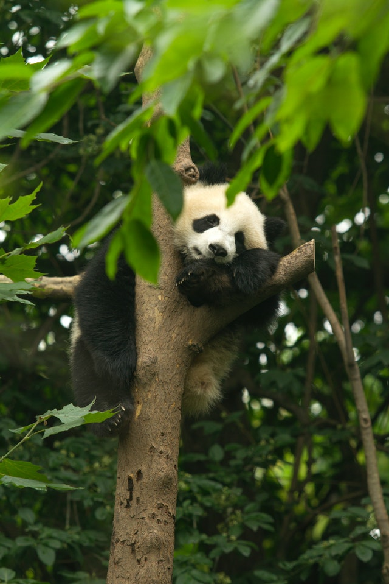

Você sabia que o panda é um mamífero de cor preto e branco que come bambu (folhas). A pelagem é grossa e lanosa para suportar as baixas temperaturas no ambiente subalpino em que vive.
As manchas oculares, membros, orelhas e uma faixa que atravessa os ombros são negras; alguma vezes com um tom acastanhado. As restantes partes do corpo são brancas, mas podem-se tornar "encardido" com a idade. A população da região de Qingling apresenta a pelagem em dois tons contrastantes de castanho.
Apesar de pertencer à ordem dos Carnívoros e ter um sistema digestivo e genético de carnívoro, o panda possui hábitos herbívoros, alimentando-se quase que exclusivamente das folhas de bambus. Análises usando assinaturas químicas de ossos e dentes de pandas antigos e modernos indicam que a hiperdependência de ursos em bambu poderia ter se desenvolvido há cerca de 5 mil anos. O panda gigante consome, em média, de 9 a 14kg de bambu por dia, mas devido à pouca absorção de nutrientes, característica do seu sistema digestivo ineficiente, ele tem que passar a maior parte do dia a comer e exercitar-se um pouco. Os pandas podem alimentar-se de 25 espécies diferentes de bambus, mas a devastação das florestas limitou-os a pouca variedade em lugares mais íngremes, elevados e isolados da Ásia central. As folhas e os brotos de bambus são ricas em proteínas. Apesar de manterem as presas, garras, capacidade digestiva e força para caçar pequenos mamíferos, aves, peixes e ovos, os pandas raramente o fazem. A sua digestão de celulose depende de sua flora intestinal, sendo a sua genética desfavorável.